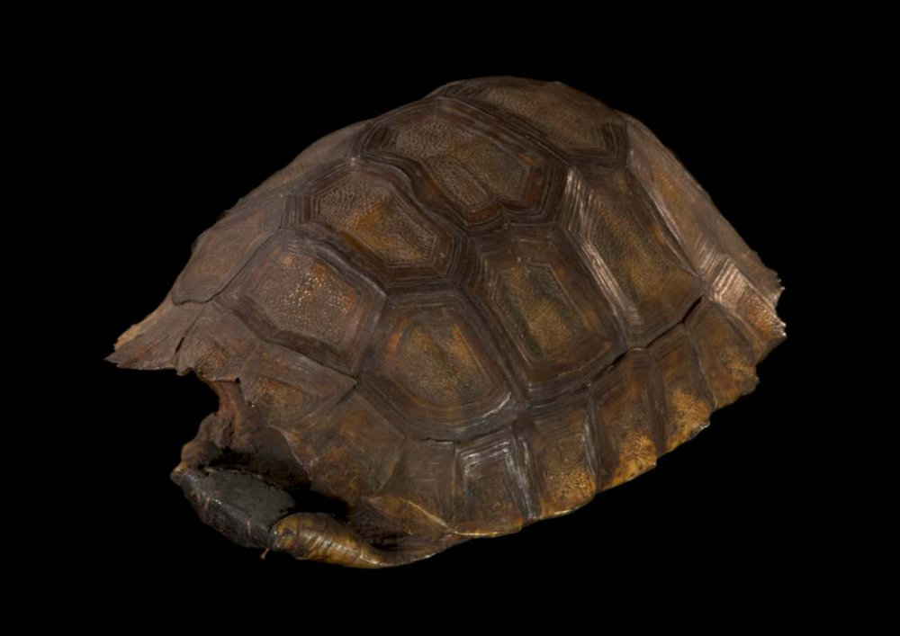

Tortugas sonoras de Colombia
Nota 014
Inicio > Blog Bitácora de un músico > Nota 014
Los caparazones de tortuga han sido empleados largamente en los cinco continentes como materia prima para la elaboración de distintos tipos de instrumentos musicales.
En Colombia, y de acuerdo a Carlos Miñana Blasco, los Cubeo de la cuenca del río Vaupés (departamentos del Vaupés y del Guaviare, y áreas vecinas del estado brasileño de Amazonas) emplean caparazones de tortuga de tierra makáku+nbó (macacûùbo o morrocoy, Geochelone carbonaria) o de agua jiákumi (jiacûùbo o tortuga arrau, Podocnemis expansa) para la interpretación de música instrumental y cantos populares (yiriaino), junto con flautas de Pan y silbatos de cráneos de venado.
Miñana Blasco también menciona la kjúumuhe de los Bora (departamento de Amazonas), un idiófono de fricción cuyo uso ha dejado de estar vigente, pues ya no se llevan a cabo las grandes pescas colectivas con barbasco en las que se tocaba junto con una pequeña flauta de Pan.
Los Camsá o Camëntsá (departamentos de Putumayo y Nariño) utilizan un instrumento similar, que denominan torturés; los Ika o Arhuaco (Sierra Nevada de Santa Marta), el caparazón de tortuga frotado kúngüi, según Egberto Bermúdez; y los Tikuna del "Trapecio amazónico" colombiano (y áreas cercanas del estado Amazonas, Brasil), el caparazón de la tortuga torí, un regalo de su héroe civilizador, Yoi o Yoí, que golpeado con una ramita de ubu acompaña cantos domésticos cotidianos y fiestas comunitarias como la de iniciación femenina yüü. Los dos últimos vienen reseñados también por Bermúdez, que indica su presencia igualmente entre los Inga (departamento de Putumayo). Para los Tukano o Yepa-masa (departamentos del Vaupés y del Guaviare, y el estado brasileño de Amazonas) existen referencias museográficas de caparazones de tortuga, al parecer de interpretación por fricción, recogidos durante la expedición de Gerardo Reichel-Dolmatoff al Vaupés en 1967.
Por su parte, los Carapana o Karapana (departamento del Vaupés) interpretan la ujerica, y sus vecinos Barasana, Paneroa o Barasano del Sur, la gu coro. En la misma área, los Bara, Waimaja o Barasano del Norte, los Piratapuyo o Wa'ikâná y los Tatuyo también ejecutan caparazones; los primeros los interpretan junto a una flauta de Pan, en tanto que los Piratapuyo los denominan kuú. Los Cacua o Kakwâ (departamento del Guaviare) ejecutan conchas de tortuga acompañando a pequeñas flautas de Pan de 2-3 tubos; lo mismo hacen los Macuna o Buhágana del sur del departamento del Vaupés, que llaman al instrumento gusiraga coro. En todos los casos se trata de idiófonos a los que se añade un trozo de cera de abeja (generalmente cerca del borde inferior de la cabeza) y que se interpretan por fricción de los dedos o de la palma de la mano.
Más información sobre estos artefactos sonoros puede encontrarse en el libro digital de acceso libre Caparazones de tortuga en la música tradicional latinoamericana, accesible a través de la sección "Libros digitales sobre música. Serie 1".